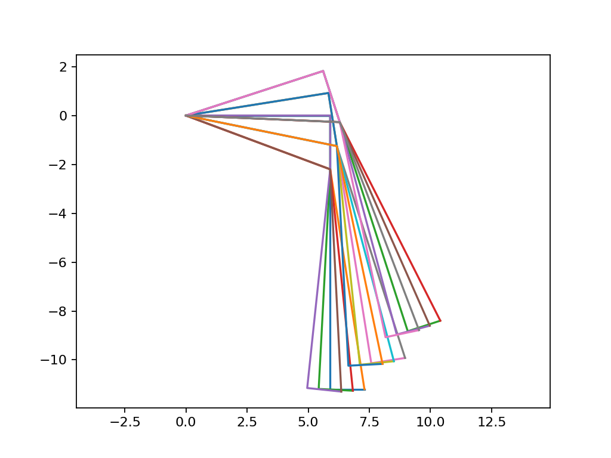
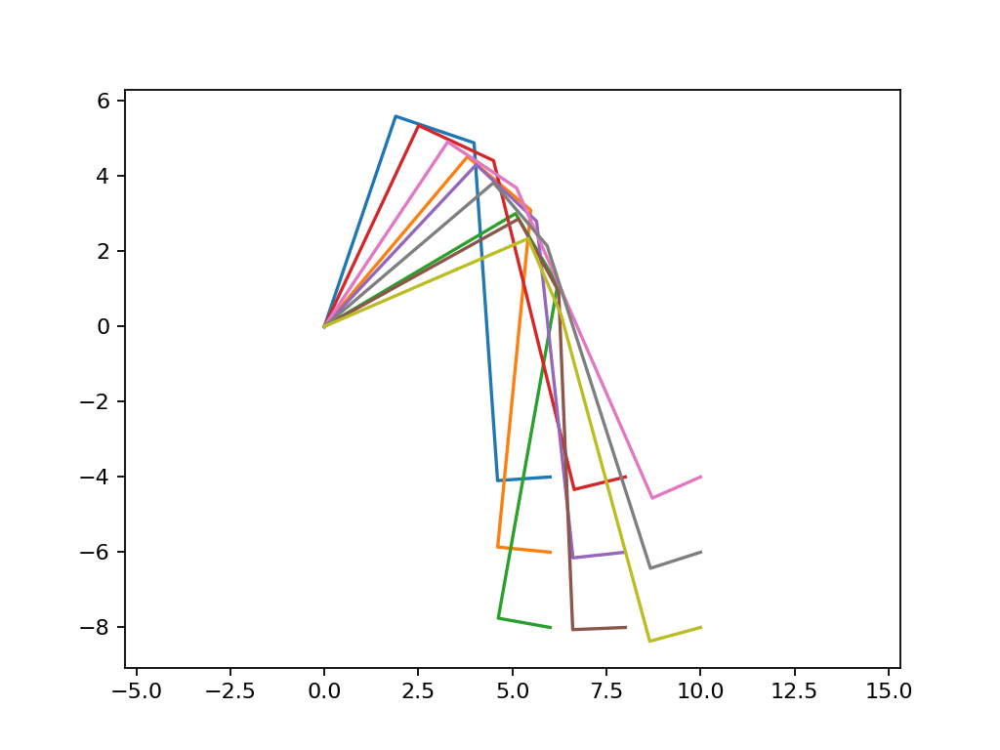

Spider¶
@todoc This is just a stub. @todoc Add links to the building instructions, maybe a picture or video of the robot.
Cinematic model of a leg¶
Direct model¶
@todoc Add a schematic of the leg to explain the direct model.
With \(a' = k - a\):
\[\begin{split}\left\{ \begin{array}{l}
r = l_1 \cdot \cos(k) + l_2 \cdot \sin(k) + l_3 \cdot \sin(a') + l_4 \cdot \cos(a')
\\
z = l_1 \cdot \sin(k) - l_2 \cdot \cos(k) - l_3 \cdot \cos(a') + l_4 \cdot \sin(a')
\end{array} \right.\end{split}\]
Let:
\[ \begin{align}\begin{aligned}l_{12} = \sqrt{l_1^2 + l_2^2}\\l_{34} = \sqrt{l_3^2 + l_4^2}\\\alpha_{21} = \arctan(l_2 / l_1)\\\alpha_{43} = \arctan(l_4 / l_3)\end{aligned}\end{align} \]
We obtain:
\[\begin{split}\left\{ \begin{array}{l}
r = l_{12} \cdot \cos(k - \alpha_{21}) + l_{34} \cdot \sin(a' + \alpha_{43})
\\
z = l_{12} \cdot \sin(k - \alpha_{21}) - l_{34} \cdot \cos(a' + \alpha_{43})
\end{array} \right.\end{split}\]
Let \(k' = k - \alpha_{21}\) and \(a'' = a' + \alpha_{43}\):
\[\begin{split}\left\{ \begin{array}{l}
r = l_{12} \cdot \cos(k') + l_{34} \cdot \sin(a'')
\\
z = l_{12} \cdot \sin(k') - l_{34} \cdot \cos(a'')
\end{array} \right.\end{split}\]
@todoc Improve readability.
import math
import matplotlib.pyplot as plt
plt.axis('equal')
l_1 = 5.9
l_2 = 2.2
l_3 = 9
l_4 = 1.4
l_12 = math.hypot(l_1, l_2)
l_34 = math.hypot(l_3, l_4)
alpha_21 = math.atan2(l_2, l_1)
alpha_43 = math.atan2(l_4, l_3)
for k in [0, math.pi/20, math.pi/10]:
for a in [0, math.pi/60, math.pi/30]:
ap = k - a
r_1 = l_1 * math.cos(k)
z_1 = l_1 * math.sin(k)
r_2 = r_1 + l_2 * math.sin(k)
z_2 = z_1 - l_2 * math.cos(k)
r_3 = r_2 + l_3 * math.sin(ap)
z_3 = z_2 - l_3 * math.cos(ap)
r_4 = r_3 + l_4 * math.cos(ap)
z_4 = z_3 + l_4 * math.sin(ap)
plt.plot([0, r_1, r_2, r_3, r_4], [0, z_1, z_2, z_3, z_4])
kp = k - alpha_21
app = ap + alpha_43
r_2 = l_12 * math.cos(kp)
z_2 = l_12 * math.sin(kp)
r_4 = r_2 + l_34 * math.sin(app)
z_4 = z_2 - l_34 * math.cos(app)
r = [0, r_2, r_4]
plt.plot([0, r_2, r_4], [0, z_2, z_4])

Inverse model¶
Finding \(k'\) and \(k\)¶
\[ \begin{align}\begin{aligned}\begin{split}\left\{ \begin{array}{l}
r = l_{12} \cdot \cos(k') + l_{34} \cdot \sin(a'')
\\
z = l_{12} \cdot \sin(k') - l_{34} \cdot \cos(a'')
\end{array} \right.\end{split}\\\begin{split}\left\{ \begin{array}{l}
l_{34} \cdot \sin(a'') = r - l_{12} \cdot \cos(k')
\\
l_{34} \cdot \cos(a'') = l_{12} \cdot \sin(k') - z
\end{array} \right.\end{split}\\\begin{split}\left\{ \begin{array}{l}
(l_{34} \cdot \sin(a''))^2 = (r - l_{12} \cdot \cos(k'))^2
\\
(l_{34} \cdot \cos(a''))^2 = (l_{12} \cdot \sin(k') - z)^2
\end{array} \right.\end{split}\\\begin{split}\left\{ \begin{array}{l}
l_{34}^2 \cdot \sin(a'')^2 = r^2 - 2 \cdot r \cdot l_{12} \cdot \cos(k') + l_{12}^2 \cdot \cos(k')^2
\\
l_{34}^2 \cdot \cos(a'')^2 = l_{12}^2 \cdot \sin(k')^2 - 2 \cdot l_{12} \cdot \sin(k') \cdot z + z^2
\end{array} \right.\end{split}\\l_{34}^2 \cdot \sin(a'')^2 + l_{34}^2 \cdot \cos(a'')^2 = r^2 - 2 \cdot r \cdot l_{12} \cdot \cos(k') +
l_{12}^2 \cdot \cos(k')^2 + l_{12}^2 \cdot \sin(k')^2 - 2 \cdot l_{12} \cdot \sin(k') \cdot z + z^2\\l_{34}^2 \cdot (\sin(a'')^2 + \cos(a'')^2) = r^2 - 2 \cdot r \cdot l_{12} \cdot \cos(k') +
l_{12}^2 \cdot (\sin(k')^2 + \cos(k')^2) - 2 \cdot l_{12} \cdot \sin(k') \cdot z + z^2\\l_{34}^2 = r^2 - 2 \cdot r \cdot l_{12} \cdot \cos(k') + l_{12}^2 - 2 \cdot l_{12} \cdot \sin(k') \cdot z + z^2\\r^2 + z^2 + l_{12}^2 - l_{34}^2 = 2 \cdot r \cdot l_{12} \cdot \cos(k') + 2 \cdot l_{12} \cdot \sin(k') \cdot z\\\frac{r^2 + z^2 + l_{12}^2 - l_{34}^2}{2 \cdot l_{12}} = r \cdot \cos(k') + z \cdot \sin(k')\\\frac{r^2 + z^2 + l_{12}^2 - l_{34}^2}{2 \cdot l_{12} \cdot \sqrt{r^2 + z^2}} = \sin(k' + \arctan(r/z))\\\arcsin\left(\frac{r^2 + z^2 + l_{12}^2 - l_{34}^2}{2 \cdot l_{12} \cdot \sqrt{r^2 + z^2}}\right) = k' +
\arctan(r/z)\\k' = \arcsin\left(\frac{r^2 + z^2 + l_{12}^2 - l_{34}^2}{2 \cdot l_{12} \cdot \sqrt{r^2 + z^2}}\right) -
\arctan(r/z)\\k = \arcsin\left(\frac{r^2 + z^2 + l_{12}^2 - l_{34}^2}{2 \cdot l_{12} \cdot \sqrt{r^2 + z^2}}\right) -
\arctan(r/z) + \alpha_{21}\end{aligned}\end{align} \]
Finding \(a''\)¶
\[ \begin{align}\begin{aligned}\begin{split}\left\{ \begin{array}{l}
r = l_{12} \cdot \cos(k') + l_{34} \cdot \sin(a'')
\\
z = l_{12} \cdot \sin(k') - l_{34} \cdot \cos(a'')
\end{array} \right.\end{split}\\\begin{split}\left\{ \begin{array}{l}
l_{12} \cdot \cos(k') = r - l_{34} \cdot \sin(a'')
\\
l_{12} \cdot \sin(k') = z + l_{34} \cdot \cos(a'')
\end{array} \right.\end{split}\\\begin{split}\left\{ \begin{array}{l}
(l_{12} \cdot \cos(k'))^2 = (r - l_{34} \cdot \sin(a''))^2
\\
(l_{12} \cdot \sin(k'))^2 = (z + l_{34} \cdot \cos(a''))^2
\end{array} \right.\end{split}\\\begin{split}\left\{ \begin{array}{l}
l_{12}^2 \cdot \cos(k')^2 = r^2 - 2 \cdot r \cdot l_{34} \cdot \sin(a'') + l_{34}^2 \cdot \sin(a'')^2
\\
l_{12}^2 \cdot \sin(k')^2 = z^2 + 2 \cdot z \cdot l_{34} \cdot \cos(a'') + l_{34}^2 \cdot \cos(a'')^2
\end{array} \right.\end{split}\\l_{12}^2 \cdot \cos(k')^2 + l_{12}^2 \cdot \sin(k')^2 = r^2 - 2 \cdot r \cdot l_{34} \cdot \sin(a'') +
l_{34}^2 \cdot \sin(a'')^2 + z^2 + 2 \cdot z \cdot l_{34} \cdot \cos(a'') + l_{34}^2 \cdot \cos(a'')^2\\l_{12}^2 \cdot (\cos(k')^2 + \sin(k')^2) = r^2 - 2 \cdot r \cdot l_{34} \cdot \sin(a'') + z^2 +
2 \cdot z \cdot l_{34} \cdot \cos(a'') + l_{34}^2 \cdot (\sin(a'')^2 + \cos(a'')^2)\\l_{12}^2 = r^2 - 2 \cdot r \cdot l_{34} \cdot \sin(a'') + z^2 + 2 \cdot z \cdot l_{34} \cdot \cos(a'') + l_{34}^2\\l_{12}^2 - r^2 - z^2 - l_{34}^2 = 2 \cdot z \cdot l_{34} \cdot \cos(a'') - 2 \cdot r \cdot l_{34} \cdot \sin(a'')\\\frac{l_{12}^2 - r^2 - z^2 - l_{34}^2}{2 \cdot l_{34}} = z \cdot \cos(a'') - r \cdot \sin(a'')\\\frac{l_{12}^2 - r^2 - z^2 - l_{34}^2}{2 \cdot l_{34}} = \sqrt{r^2 + z^2} \cdot \sin(a'' - \arctan(z/r))\\\frac{l_{12}^2 - r^2 - z^2 - l_{34}^2}{2 \cdot l_{34} \cdot \sqrt{r^2 + z^2}} = \sin(a'' - \arctan(z/r))\\\arcsin\left(\frac{l_{12}^2 - r^2 - z^2 - l_{34}^2}{2 \cdot l_{34} \cdot \sqrt{r^2 + z^2}}\right) = a'' -
\arctan(z/r)\\a'' = \arcsin\left(\frac{l_{12}^2 - r^2 - z^2 - l_{34}^2}{2 \cdot l_{34} \cdot \sqrt{r^2 + z^2}}\right) +
\arctan(z/r)\\a' = \arcsin\left(\frac{l_{12}^2 - r^2 - z^2 - l_{34}^2}{2 \cdot l_{34} \cdot \sqrt{r^2 + z^2}}\right) +
\arctan(z/r) - \alpha_{43}\\a = k - \arcsin\left(\frac{l_{12}^2 - r^2 - z^2 - l_{34}^2}{2 \cdot l_{34} \cdot \sqrt{r^2 + z^2}}\right) -
\arctan(z/r) + \alpha_{43}\end{aligned}\end{align} \]
Let’s try it¶
import math
import matplotlib.pyplot as plt
plt.axis('equal')
l_1 = 5.9
l_2 = 2.2
l_3 = 9
l_4 = 1.4
l_12 = math.hypot(l_1, l_2)
l_34 = math.hypot(l_3, l_4)
alpha_21 = math.atan2(l_2, l_1)
alpha_43 = math.atan2(l_4, l_3)
for r in [6., 8., 10.]:
for z in [-4., -6., -8.]:
# @todoc Review previous resolution to explain why it's -arcsin instead of just arcsin
k = (
(-math.asin((r ** 2 + z ** 2 + l_12 ** 2 - l_34 ** 2) / (2 * l_12 * math.sqrt(r ** 2 + z ** 2)))) -
math.atan(r/z) +
alpha_21
)
a = (
k -
(-math.asin((l_12 ** 2 - r ** 2 - z ** 2 - l_34 ** 2) / (2 * l_34 * math.sqrt(r ** 2 + z ** 2)))) -
math.atan(z/r) +
alpha_43
)
ap = k - a
r_1 = l_1 * math.cos(k)
z_1 = l_1 * math.sin(k)
r_2 = r_1 + l_2 * math.sin(k)
z_2 = z_1 - l_2 * math.cos(k)
r_3 = r_2 + l_3 * math.sin(ap)
z_3 = z_2 - l_3 * math.cos(ap)
r_4 = r_3 + l_4 * math.cos(ap)
z_4 = z_3 + l_4 * math.sin(ap)
plt.plot([0, r_1, r_2, r_3, r_4], [0, z_1, z_2, z_3, z_4])
# kp = k - alpha_21
# app = ap + alpha_43
# r_2 = l_12 * math.cos(kp)
# z_2 = l_12 * math.sin(kp)
# r_4 = r_2 + l_34 * math.sin(app)
# z_4 = z_2 - l_34 * math.cos(app)
# plt.plot([0, r_2, r_4], [0, z_2, z_4])
